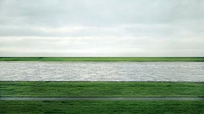

Rhein II
Andreas Gursky · 1999 · Chromogenic colour print mounted on acrylic glass
In copyright. Look and learn: shown for study, not for download.
Andreas Gursky had photographed this stretch of the Lower Rhine near Düsseldorf in 1996 and was dissatisfied with the result. For this version, made in 1999, he digitised the pictures and removed what bothered him, including dog walkers and a factory building. It is the second and largest of a set of six. He mounted the chromogenic print on acrylic glass. One print sold at Christie's New York on 8 November 2011 for $4,338,500, then the highest price paid for a photograph, a record it held until 2022.